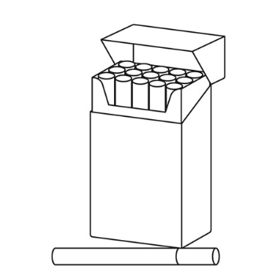
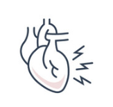

Number of Deaths by Risk Factor
United States
 
In 2000...
Finally, the numbers of smokers started decreesing. Also, less people struggled with high cholesterol. But as drinking sodas gained in popularity, and the digital world exploded more americans faced the issue of obesity. Diabeties caused by high blood sugar killed about 15% more people than in the previous decade. Another astounding statistic is the number of deaths caused by unsafe sex, it nearly doubled from the previous decade! Digital revolution and social media influenced our mood and feeling of loneliness, alcohol use and drug use are now killing more people than in the last 10 years.
■Increesed since 1990 ■Decreesed since 1990